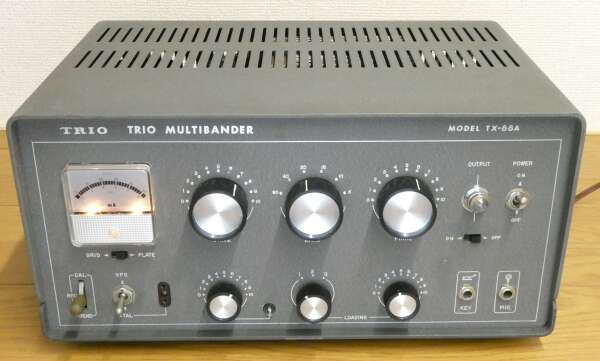
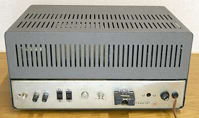
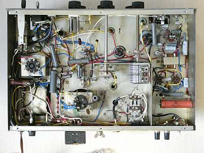
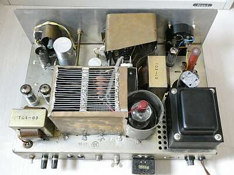
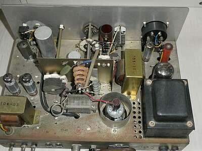
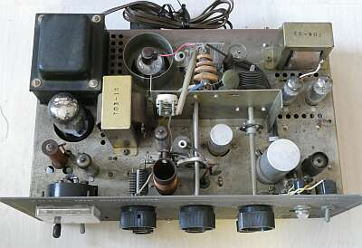
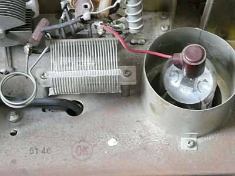

 |
当時の憧れのメーカー製送信機（キット）です
３．５ＭＨｚ帯～５０ＭＨｚ帯を１０Ｗでカバー |
手持ちのＴＲＩＯ資料によると、１９６２年１月の発売 当時、￥２１，０００だったようです
当初、終段は、ＵＹ-８０７でしたが、５０ＭＨｚ帯でパワーが出ない（公称出力１０Ｗが出ない）ということで、２Ｅ２６を採用したモデルがあったことは知っていましたが、後期には６１４６を採用したモデルがあったようです、後述します |
 |
| 相方の９Ｒ-５９と一緒に |
特段のコメントはありません
オーソドックスな3ステージ ６AQ5 => ６AQ5 => 終段
変調は、プレート・スクリーン同時変調です |
|
 |
極めてシンプルな背面です |
 |
整流管と、終段管だけはシャーシ下段に沈めてソケットが用意されています |
 |
こちらが正面写真に写っているTX-８８Aの中身です
前オーナーの手でシールドが強化されています
８０７には、当時お決まり？だった缶ピースの缶がオリジナルのシールドの外に取り付けられていました
自分の出す電波の回り込み、あるいはTVIが気になる運用だったと想像できます |
 |
こちらがオリジナルの状態です
別のTX-８８Aです |
 |
見る角度を変えて |
 |
このものですが、シャーシには「６１４６」のスタンプが押してあり、実際には日本無線（JRC)の２Ｂ４６が使用されています
このものを見るまで、ＴＸ-８８Ａに６１４６の使用はないと思っていました |
|
ＴＸ-８８Ａについて、終段管だけを見ても結構な種類というか分派があったようです
この時代らしいといえばそうですが、抵抗器はＬ型が多用されています |